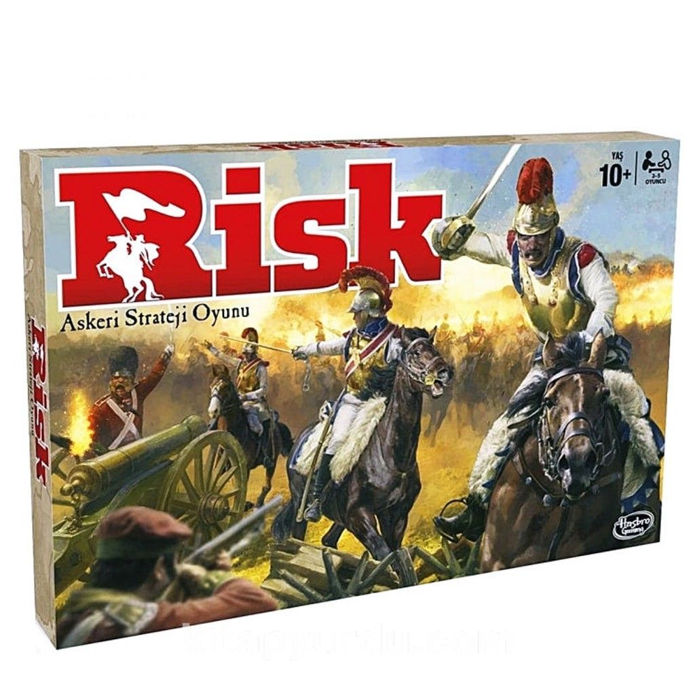

OYUNUN AMACI
Gizli Görev kartında yazan Gizli Görevi ilk tamamlayan oyuncu olmak…
OYUNA HAZIRLIK
-
İlk olarak her oyuncu bir ordu seçer.
Oyuncu sayısına göre her oyuncunun
kaç askeri birlikle oyuna başlayacağını
aşağıdaki kutuda görebilirsiniz.
3 oyuncu
Her oyuncu 35 Piyade ile oyuna başlar
4 Oyuncu
Her oyuncu 30 Piyade ile oyuna başlar
5 Oyuncu
Her oyuncu 25 Piyade ile oyuna başlar
-
Sonra bir oyuncuyu General seçin.
General, kart destesinden 12 Gizli Görev
kartını ayırır. Oyunda 5’ten az oyuncu
varsa, kullanılmayan renkteki ordularla
ilgili Gizli Görev kartlarını ayırır ve
kutuya geri koyar. Örneğin, yeşil ordu bir
oyuncu tarafından seçilmemişse, General
yeşil orduyla ilgili görevleri içeren tüm
Gizli Görev kartlarını oyundan çıkarır.
-
Sonra General tüm Gizli Görev kartlarını
karıştırır ve solundaki oyuncudan
başlamak üzere her oyuncuya kapalı
olarak sadece birer kart dağıtır. Geri
kalan Gizli Görev kartları kutuya geri
konur; General dahil hiç kimse bu kartlara
bakamaz.
-
General, bölge kartlarının içinden iki
“joker” kartı da çıkarır. Geri kalan bölge
kartlarını iyice karıştırır ve solundaki
oyuncudan başlayarak kartlar bitene
kadar herkese birer birer kartları dağıtır.
(4 veya 5 kişilik oyunda, 2 oyuncu birer
kart fazla alır.) Bu kartlar oyunun başında
hangi oyuncunun hangi bölgelere sahip
olduğunu gösterir.
-
Sonra her oyuncu sahip olduğu her
bölgeye birer Piyade yerleştirir.
-
42 bölgenin tamamında birer Piyade
olduğunda, oyuncular sırayla kendilerine
ait istedikleri bölgelere birer Piyade daha
koyar. Tüm oyuncular ellerindeki askerler
bitinceye kadar ordularını yerleştirmeye
devam eder. Bir anlaşmazlık olmaması
için ilk oyuncunun bir Piyade koymasının
ardından sıranın diğer oyuncuya geçmesi
ve bu şekilde Piyadelerin birer birer
koyulması gerekir. Yerleştirmeye en
küçük oyuncu başlar. (Not: Bir bölgede
bulundurabileceğiniz askeri birliklerin
sayısı için bir sınırlama yoktur. Bir
bölgeyi çok sayıda askerle güçlendirmeyi
ve diğer bölgelerinize daha az asker
koymayı tercih edebilirsiniz. RİSK’teki
pek çok şey gibi bu karar da size bağlıdır.)
-
Ordular yerleştikten sonra General tüm
bölge kartlarını toplar, iki “joker” kartı
desteye ekler, kartları karıştırır ve kapalı
olarak oyun alanının yanına koyar.
-
Artık ilk turu oynamaya hazırsınız.
Her oyuncu bir zar atar. En büyük zarı
atan oyuncu oyuna başlar ve oyun saat
yönünde devam eder.
NASIL OYNANIR
Sıra size her geldiğinde bu 3 talimatı sırasıyla uygulayın:
-
Yeni askeri birlikler alın ve
oyun alanına yerleştirin.
-
Savaş ilan edin (istiyorsanız).
-
Askerlerinizin yerlerini
değiştirin (istiyorsanız).